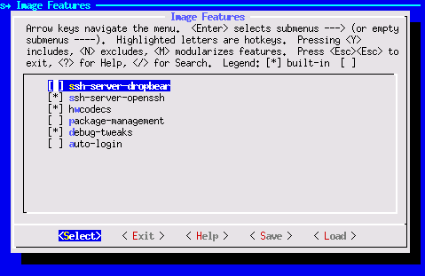
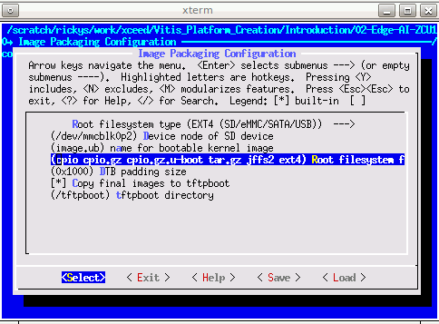

Step 2: Create the Software Components with PetaLinux¶
A Vitis platform requires software components. Xilinx provides common software images for quick evaluation. Here since we’d like to demonstrate more software environment customization, we’ll use the PetaLinux tools to create the Linux image and sysroot with XRT support, together with some more advanced tweaks. Among all the customizations, the XRT installation and ZOCL device tree setup are mandatory. Other customizations are optional. The customization purposes are explained. Please feel free to pick your desired customization.
Yocto or third-party Linux development tools can also be used as long as they produce the same Linux output products as PetaLinux.
Create a PetaLinux Project¶
Setup PetaLinux environment
source <petaLinux_tool_install_dir>/settings.shCreate a PetaLinux project named zcu104_custom_plnx and configure the hw with the XSA file we created before:
petalinux-create --type project --template zynqMP --name zcu104_custom_plnx cd zcu104_custom_plnx petalinux-config --get-hw-description=<vivado_design_dir>
After this step, your directory hierarchy looks like this.
- zcu104_custom_platform # Vivado Project Directory - zcu104_custom_plnx # PetaLinux Project Directory
A petalinux-config menu would be launched, Set to use ZCU104 device tree in this configuration window.
Select DTG Settings->MACHINE_NAME
Modify it to
zcu104-revc.Select OK -> Exit -> Exit -> Yes to close this window.
Note:
If you are using a Xilinx development board it is recommended to modify the machine name so that the board configurations would be involved in the DTS auto-generation.
If you’re using a custom board, you would need to configure the associated settings (e.g. the PHY information DTS node) in system-user.dtsi manually.
Device tree is a generic technology in embedded Linux. Please search Google for more information.
Customize Root File System, Kernel, Device Tree and U-boot¶
Add user packages
Append the CONFIG_x lines below to the <your_petalinux_project_dir>/project-spec/meta-user/conf/user-rootfsconfig file.
Note: This step is not a must but it makes it easier to find and select all required packages in next step. If this step is skipped, please enable the required packages one by one in next step.
Packages for base XRT support:
CONFIG_xrtxrt is required for Vitis acceleration flow. The dependency packages such as ZOCL driver module will be added automatically.
Recommended Packages for easy system management
CONFIG_dnf CONFIG_e2fsprogs-resize2fs CONFIG_parted CONFIG_resize-part
dnf is for package package management
parted, e2fsprogs-resize2fs and resize-part can be used for ext4 partition resize. We will use it to expand the ext4 partition to make full use of SD card size when running Vitis-AI test case in Step 4.
Packages for Vitis-AI dependencies support:
CONFIG_packagegroup-petalinux-vitisai
Optional Packages for natively building Vitis AI applications on target board:
CONFIG_packagegroup-petalinux-self-hosted CONFIG_cmake CONFIG_packagegroup-petalinux-vitisai-dev CONFIG_xrt-dev CONFIG_opencl-clhpp-dev CONFIG_opencl-headers-dev CONFIG_packagegroup-petalinux-opencv CONFIG_packagegroup-petalinux-opencv-dev
Optional Packages for running Vitis-AI demo applications with GUI
CONFIG_mesa-megadriver CONFIG_packagegroup-petalinux-x11 CONFIG_packagegroup-petalinux-v4lutils CONFIG_packagegroup-petalinux-matchbox
Enable selected rootfs packages
Run
petalinux-config -c rootfsSelect User Packages
select name of rootfs all the libraries listed above.

Note: If step 1 is skipped, please find the corresponding package and enable them.
Enable OpenSSH and disable dropbear (optional)
Dropbear is the default SSH tool in Vitis Base Embedded Platform. If OpenSSH is used to replace Dropbear, the system could achieve 4x times faster data transmission speed over ssh (tested on 1Gbps Ethernet environment). Since Vitis-AI applications may use remote display feature to show machine learning results, using OpenSSH can improve the display experience.*
Still in the RootFS configuration window, go to root directory by select Exit once.
Go to Image Features.
Disable ssh-server-dropbear and enable ssh-server-openssh and click Exit.

Go to Filesystem Packages-> misc->packagegroup-core-ssh-dropbear and disable packagegroup-core-ssh-dropbear.
Go to Filesystem Packages level by Exit twice.
Go to console -> network -> openssh and enable openssh, openssh-sftp-server, openssh-sshd, openssh-scp.
Go to root level by Exit four times.
Enable Package Management
Package management feature can allow the board to install and upgrade software packages on the fly.
In rootfs config go to Image Features and enable package-management and debug_tweaks option
Click OK, Exit twice and select Yes to save the changes.
Disable CPU IDLE in kernel config (Recommended during debugging).
CPU IDLE would cause processors get into IDLE state (WFI) when the processor is not in use. When JTAG is connected, the hardware server on host machine talks to the processor regularly. If it talks to a processor in IDLE status, the system will hang because of incomplete AXI transactions. So it is recommended to disable the CPU IDLE feature during project development phase. It can be re-enabled after the design has completed to save power in final products.
Launch kernel config:
petalinux-config -c kernelEnsure the following items are TURNED OFF by entering ‘n’ in the [ ] menu selection:
CPU Power Management > CPU Idle > CPU idle PM support
CPU Power Management > CPU Frequency scaling > CPU Frequency scaling
Exit and Save.
Update the Device tree¶
Device tree describes the hardware components of the system. Xilinx device tree generator (DTG) can generate the device tree according to hardware configurations from XSA file. User needs to add customization settings in system-user.dtsi for PetaLinux to consume if there are any settings not available in XSA, for example, any driver nodes that don’t have a corresponding hardware, or if user need to override any DTG auto-generated configurations.
ZOCL driver module has no associated hardware, but it’s required by XRT and Vitis acceleration flow. It requires a device tree node to describe the interrupt signal relationship. In previous Vitis and PetaLinux versions, users need to add ZOCL device tree node manually. From 2021.1, PetaLinux can add ZOCL device tree node automatically if the XSA is a Vitis extensible platform project.
Device Tree Generator (DTG) also overrides the interrupt controller (axi_intc_0) input numbers parameter from 0 to 32 because in the platform XSA the interrupt controller inputs have not been connected but they will be connected after v++ links the acceleration kernels.
You can review the PetaLinux generated device tree in project-spec/components/device-tree/device-tree/pl.dtsi file.
You can also add your custom device tree modifications to project-spec/meta-user/system-user.dtsi. In this example, we setup sdhci1 to low speed mode.
&sdhci1 {
no-1-8-v;
disable-wp;
};
sdhci1 node decreases SD Card speed for better card compatibility on ZCU104 board. This only relates to ZCU104. It’s not a part of Vitis acceleration platform requirements.
Note: an example file is provided in ref_files/step2_petalinux/system-user.dtsi.
Add EXT4 rootfs support (Optional but recommended)¶
It’s recommended to use EXT4 for Vitis acceleration designs. PetaLinux uses initramfs format for rootfs by default. It can’t retain the rootfs changes in run time. Initramfs keeps rootfs contents in DDR, which makes user useable DDR memory reduced. To make the root file system retain changes and to enable maximum usage of available DDR memory, we’ll use EXT4 format for rootfs in second partition while keep the first partition FAT32 to store the boot files.
Vitis-AI applications will install additional software packages. If user would like to run Vitis-AI applications, please use EXT4 rootfs. If in any case initramfs would be used, please add all Vitis-AI dependencies to initramfs.
Let PetaLinux generate EXT4 rootfs
Run
petalinux-configGo to Image Packaging Configuration
Select Root File System Type as EXT4
Exit and Save.

Let Linux use EXT4 rootfs during boot
The setting of which rootfs to use during boot is controlled by bootargs. We would change bootargs settings to allow Linux to boot from EXT4 partition. There are various ways to update bootargs. Please take either way below.
Method A: PetaLinux config
Run
petalinux-configChange DTG settings -> Kernel Bootargs -> generate boot args automatically to NO and update User Set Kernel Bootargs to
earlycon console=ttyPS0,115200 clk_ignore_unused root=/dev/mmcblk0p2 rw rootwait cma=512M. Click OK, Exit thrice and Save.
Method B: device tree
Update in system-user.dtsi
Add
chosennode in root in addition to the previous changes to this file.
/include/ "system-conf.dtsi" / { chosen { bootargs = "earlycon console=ttyPS0,115200 clk_ignore_unused root=/dev/mmcblk0p2 rw rootwait cma=512M"; }; };
Note:
root=/dev/mmcblk0p2 means to use second partition of SD card, which is the EXT4 partition.
Please note that we also set these options in bootargs:
clk_ignore_unused: it tells Linux kernel don’t turn off clocks if this clock is not used. It’s useful clocks that only drives PL kernels because PL kernels are not represented in device tree.
cma=512M: CMA is used to exchange data between PS and PL kernel. The size for CMA is determined by PL kernel requirements. Vitis-AI/DPU needs at least 512MB CMA.
Build PetaLinux Images¶
From any directory within the PetaLinux project, build the PetaLinux project.
petalinux-build
The PetaLinux image files will be generated in
/images/linux directory. Create a sysroot self-installer for the target Linux system
petalinux-build --sdk
The generated sysroot package sdk.sh will be located in
/images/linux directory. We’ll extract it in next step.
Fast Track¶
Scripts are provided to re-create PetaLinux project and generate outputs. To use these scripts, please run the following steps.
Run build
# cd to the step directory, e.g. cd step2_petalinux make all
To clean the generated files, please run
make clean
Note: The Fast Track scripts extracts the sysroot to
Next Step¶
Note: Now HW platform and SW platform are all generated. Next we would package the Vitis Platform.
Copyright© 2021 Xilinx